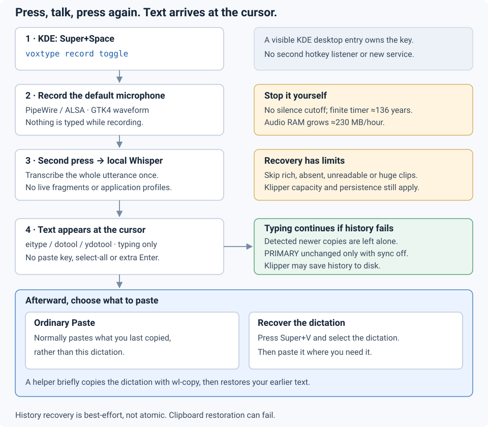

A small setup kit for packaged Voxtype 1.0.1 on KDE Plasma 6 (Wayland) with PipeWire. Press, talk, press again: the complete utterance is typed at the cursor. A default helper briefly publishes it to Klipper, then guardedly restores your previous supported plain-text clipboard.
This repository is a configuration recipe, small helper and operator runbook for packaged Voxtype 1.0.1. The installer manages three whole files: a preset, a visible KDE desktop entry, and a Python clipboard-history helper. It is not a Voxtype fork, replacement daemon or package manager. It never installs packages, downloads models, edits service units, switches the Voxtype binary or edits KDE's shortcut database by hand. Those remain deliberate operator actions (§7).
config/voxtype.toml preset, including the default history hook
config/packages.sha256 pinned GitHub asset digest for the upstream .deb
desktop/voxtype-record-toggle.desktop visible KDE shortcut entry (Meta+Space default)
scripts/clipboard_history.py complete-dictation save/copy/restore hook
scripts/{install.py,doctor.py,record-sample.sh} installer / checker / manual recorder
Makefile plan / install / doctor / test / check
docs/guide.html this guide; embeds docs/dictation-flow.svgThe design is final-on-stop transcription, direct typing plus best-effort Klipper recovery, and an explicit account of what can fail. There are no application-specific profiles, streaming fragments, separate transcript archives or Klipper database edits. The helper uses system Python's standard library and existing packaged commands; it needs no new Python package or service.
Enabled by default: a temporary, non-atomic clipboard replacement
The helper saves supported plain text A, publishes the complete dictation T, waits for Klipper capture, and guardedly restores A. Normally ordinary Paste returns A and Super+V offers T behind it. This is not atomic preservation or a history-only API: concurrent copies, failed restoration, unsupported offers and Klipper policy can prevent that outcome. Klipper may persist the dictation to disk. Read §5 before enabling the kit; remove [output.post_process] to opt out.

The chain, link by link:
X-KDE-Shortcuts=Meta+Space for its launch action. Desktop-cache discovery is not a binding guarantee: confirm it in §7.4. Voxtype's kernel-level hotkey is disabled ([hotkey] enabled = false); KDE needs no input-group access for the shortcut itself.voxtype record toggle. The packaged one-shot CLI signals the running daemon (SIGUSR1 to start, SIGUSR2 to stop) and exits. The daemon reads its configuration at startup; this kit uses no per-recording profiles.base.en baseline is already loaded (on_demand_loading = false); choose your own model, language and CPU/GPU backend.eitype, dotool, then ydotool (driver details: §7.1). The latter two use uinput. No paste key, select-all or extra submission key is sent; recognised line breaks can still generate Enter events. Typing failures do not trigger a second clipboard-output fallback, but the preceding history hook has its own documented failure risks.config/voxtype.toml is commented inline; this table is the guided tour. Model, language and compute backend are your choices — the baseline below is a starting point, not a mandate.
| Setting | Value | Why |
|---|---|---|
engine / [whisper] model / language | whisper / base.en / en | A small, fast English baseline. Edit for another model or language; nothing else in the kit depends on it. |
[whisper] on_demand_loading / eager_processing | false / false | Model loads once at daemon start, not per dictation — the biggest stop-to-text win. Nothing is emitted until stop regardless, so eager processing stays off. |
[hotkey] enabled / mode | false / toggle | KDE owns Super+Space; the evdev listener stays off. The modifier-release guard is separate. |
[audio] device | "default" | Follows the system default on each recording; a newly connected headset is used once KDE/PipeWire makes it default (§6). |
[audio] max_duration_secs | 4294967295 | The largest finite value — see §4 for the full, honest story. |
[output] mode | "type" | Keystrokes at the cursor, not a paste operation. The separate default history hook temporarily writes CLIPBOARD first (§5). |
[output] driver_order | ["eitype", "dotool", "ydotool"] | Typing-only: unavailable drivers are skipped. wtype is omitted because KWin Wayland does not implement its virtual-keyboard protocol (§7.1). |
[output] fallback_to_clipboard | false | A typing failure remains an error, not an additional clipboard-output attempt. This does not disable the history hook. |
[output.post_process] | known helper; 5000 ms; trim = false; fallback_on_empty = true | Best-effort whole-dictation Klipper capture and guarded plain-text restoration. Original text remains available to typing on skips or failures (§5). |
[output] type_delay_ms | 0 | No artificial per-character delay. Raise it (e.g. 5–10) only if characters are dropped in practice. |
[output] auto_submit, [text] smart_auto_submit | false | No extra Enter is appended to submit the result. Line breaks already present in recognised text can still generate Enter events. |
[output] wait_for_modifier_release | true | Waits briefly for modifier keys such as Super to be released before typing, so the first characters are not swallowed. |
[osd] | gtk4, 400×48, 85% down | A small waveform strip near the bottom of the screen while recording (§6). |
[output.notification] | all true | Start/stop/transcription notifications are sent; your session's focus settings may still suppress popups (§6). |
[vad] enabled | false | No voice-activity filtering — and VAD never ended a recording anyway; only the ceiling does (§4). |
Voxtype 1.0.1 stops every recording at max_duration_secs — a hard wall-clock safety timer, not silence detection; pauses do not reset it. There is no unlimited mode in this release, so this kit sets the largest finite value the configuration accepts:
| Value | What Voxtype 1.0.1 does with it |
|---|---|
0 | Stops almost immediately (the daemon checks the timer on a fast poll). Zero is not an "unlimited" sentinel — it makes things worse, not better. |
60 | The upstream default: dictations longer than a minute are cut off and transcribed early. |
3600 | The largest value voxtype config set accepts; the TOML file itself accepts more. |
4294967295 | The largest u32, accepted by direct TOML edit — ≈136 years: effectively "I stop it myself", while staying a real, finite bound the code handles cleanly. This is the preset's value. (Sources: §9.) |
Three consequences, stated plainly:
voxtype status; do not rely on notification popups your session may have suppressed.3600 and edit the TOML directly.The save/copy/restore helper is installed and enabled by default. Let A be your current supported plain-text CLIPBOARD and T the complete finished dictation. With ordinary Klipper history settings and enough capacity, the intended result is CLIPBOARD = A and history [A, T]: ordinary Paste still inserts A, and Super+V can recover T. Delivery remains mode = "type", not paste; no clipboard driver or clipboard failure fallback is added.
wl-paste --list-types and bytes with wl-paste --no-newline; never use history-top text as the backup. Recheck the offers and bytes before writing.wl-copy's stdin. Poll qdbus6 org.kde.klipper /klipper getClipboardHistoryItem 0 for the exact UTF-8 text plus qdbus6's single framing LF; do not strip the item's own newlines or use a guessed capture delay. An already-retained duplicate is acceptable.The installer puts scripts/clipboard_history.py at ${XDG_DATA_HOME:-$HOME/.local/share}/voxtype-setup/clipboard_history.py, mode 0600, before installing the configuration. Python reads it; it is not executable. The preset uses this exact upstream post-processing interface:
[output.post_process]
command = 'exec /usr/bin/python3 "${XDG_DATA_HOME:-$HOME/.local/share}/voxtype-setup/clipboard_history.py"'
timeout_ms = 5000
trim = false
fallback_on_empty = trueThe helper uses only the Python standard library, wl-copy, wl-paste and qdbus6. No Python D-Bus binding, native client, extra service or database access is introduced. The ordinary background wl-copy provider serves the selection; it is not another managed daemon. A small empty lock file may remain under XDG_RUNTIME_DIR.
T matches this preset's dispatched text, not an arbitrary custom pipeline. Voxtype 1.0.1 still removes trailing LF characters with trim = false, then normalizes eight curly quote/prime characters to ASCII before output. The helper mirrors those steps for the history copy while leaving its stdout byte-exact; interior line breaks, spaces and other Unicode remain. Custom formatters or append_text choices are outside this baseline. The helper ignores prior dictation context and puts no transcript in command arguments, files, logs or diagnostics; its failure message is content-free.
Only readable UTF-8, genuinely plain-text offers are supported: text/plain, text/plain;charset=utf-8 and conventional UTF8_STRING/TEXT/STRING aliases. The old text's bytes, including trailing newlines, are restored, but the original set of alias formats may change. This is not a promise to preserve every MIME representation or application-specific meaning.
Best effort is not compare-and-swap
A user copy can occur between the last check and a restore. The helper prefers a detected newer C, but cannot eliminate that gap or promise that ordinary Paste always returns A. During the temporary replacement, another application can read T; failed cleanup, a crash or SIGKILL can leave T current. Choose the no-hook opt-out below if that trade-off is unacceptable.
setClipboardContents; that setter writes both CLIPBOARD and PRIMARY. Internal history insertion is not exported (§9). This kit instead uses the explicit temporary CLIPBOARD round trip, never SQLite edits or a second transcript archive.For pure direct typing, remove the entire [output.post_process] table from config/voxtype.toml, review make plan, reapply with explicit replacement permission, and restart Voxtype only while idle. Leave the typing-only driver list, mode = "type" and fallback_to_clipboard = false intact. The installed helper can remain unused; output then needs no clipboard tools. qdbus6 still serves the separate KDE shortcut check.
make doctor never runs the helper or reads clipboard/history. With the known hook selected it checks its command/settings, command availability and installed helper metadata (regular file, user-owned, mode 0600, safe parent), not the helper's contents or actual operation. A custom hook receives qualified diagnostics, not a blanket safety promise. Manual acceptance is in §8.
Voxtype 1.0.1's built-in paste mode is a separate implementation, not the default here. Source review found wl-paste without --no-newline (which can add a newline to restored text), a single-MIME snapshot, unguarded restoration over concurrent copies, and failure paths that can strand the dictation (§9). The kit's helper avoids those specific choices, but still accepts the underlying non-atomic trade-off.
Earlier native experiments explored multi-representation restoration and ownership notifications. They are historical comparisons, not extra installed components or proof of lossless preservation: the shipped helper deliberately skips rich offers. Observed short replacement intervals do not establish an exact global exposure window or a guaranteed two-millisecond round trip.
The microphone follows the system default. With device = "default", each recording opens the input currently selected through KDE / PipeWire's ALSA route. Plug in a headset and make it default in KDE's Sound settings; the next take uses it without a daemon restart. PipeWire/WirePlumber owns fallback when a device disappears and may select a different available input. A change mid-recording can cause a gap — start a fresh take. voxtype info devices lists names if you deliberately want to pin one. Neither installer nor doctor opens a microphone.
The OSD is best-effort about placement. The preset shows a 400×48 px waveform strip, horizontally centred at 85% of the screen height, via the GTK4 layer-shell frontend. Layer-shell lets the compositor choose the output, so on multi-monitor setups the strip may appear on a different display than you expect — there is no pinned-monitor option in this release. Notifications via libnotify may be suppressed by focus/do-not-disturb modes or per-application notification settings even though Voxtype sends them; the waveform OSD and voxtype status are the dependable indicators.
Prerequisites: KDE Plasma 6 on Wayland with PipeWire, packaged Voxtype 1.0.1, a configured typing driver (eitype, dotool or ydotool), GTK4 layer-shell for the OSD, and wl-copy/wl-paste/qdbus6 for the default recovery hook. qdbus6 also checks shortcut ownership. The kit uses Bash, Python 3.11+ and Make; git/wget fetch the checkout/release. Everything below is an explicit operator action: the installer never invokes package managers, sudo, downloads, group changes, service commands or binary switches.
Debian 13 amd64 is the tested baseline. The prebuilt DEB needs an x86-64-v3 (AVX2) CPU. Ubuntu/Kubuntu with compatible Plasma 6 packages is untested; check library/package availability and service names rather than assuming Debian's packaging. An existing working Voxtype installation needs no purge, backend switch, model re-download or group change merely to apply these three assets (§7.3).
Everything apt can provide comes first — this kit's helpers, the OSD library, audio tools and entry validation (desktop-file-utils is optional). ydotool 1.0.4 lives in the official trixie-backports repository, so enable it per the Debian Backports instructions before the second command — the kit never adds repositories:
sudo apt install git make python3 wget \
libgtk4-layer-shell0 wl-clipboard libnotify-bin pipewire-alsa \
alsa-utils qdbus-qt6 libkf6service-bin desktop-file-utils
sudo apt install -t trixie-backports ydotoolOnly two pieces are manual downloads, because apt does not carry them: the upstream Voxtype release and the Whisper weights. Fetch the DEB into this checkout's ignored tmp/, verify it against the pinned digest, then let apt install the local file — dependency resolution still comes from apt. The weights are a separate explicit voxtype setup step, deliberately without --activate:
# Run from this checkout's root; downloads stay under ignored tmp/.
mkdir -p tmp/packages
wget -O tmp/packages/voxtype_1.0.1-1_amd64.deb \
https://github.com/peteonrails/voxtype/releases/download/v1.0.1/voxtype_1.0.1-1_amd64.deb
sha256sum --check config/packages.sha256
sudo apt install ./tmp/packages/voxtype_1.0.1-1_amd64.deb
voxtype setup --download --model base.enThe pinned checksum is GitHub's published release-asset digest, not an independent publisher signature; upstream's SHA256SUMS.txt does not cover the DEB, so it is not used as a false verification step.
About the typing drivers: the preset tries eitype (libei/portal; each invocation briefly registers with the remote-desktop portal), then dotool (uinput, keyboard-layout aware), then ydotool (uinput, needs its daemon, sends raw US keycodes — potentially wrong on non-US layouts). See the upstream driver reference for eitype/dotool. wtype is absent because KWin Wayland does not implement its virtual-keyboard protocol. Unavailable drivers are skipped; make doctor reports availability but never invokes one.
CPU or GPU is your call. CPU inference works with the package as installed. On supported hardware you may opt into a GPU backend with the upstream interactive sudo voxtype setup gpu --enable, which manages the /usr/bin/voxtype variant symlink; voxtype info variants shows the choices and voxtype info accel reports what is active. The kit never switches binaries and assumes no particular GPU vendor.
The input group is a privacy decision — never a silent one
Upstream suggests sudo usermod -aG input "$USER". Know what that grants: write access to /dev/uinput — which Debian's ydotool user unit needs for injection, as does dotool — and read access to every keyboard event on the system under /dev/input, which Voxtype's modifier-release guard separately uses. The Super+Space shortcut itself does not need the group, because KDE owns the key. It remains your call, made with both eyes open; neither this kit nor any script in it will ever add you to a group. If you accept, join the group yourself, then log out and back in fully before enabling the services. If you decline, ydotool's packaged unit cannot be promised to work — consider eitype, or a deliberately configured uinput permission arrangement for dotool/ydotool. Dotool is not a permission-free escape hatch; follow the chosen driver's upstream requirements. Either way, never work around the decision with world-writable devices or sockets.
After applying the preset in §7.3, use the packaged service units; this kit ships none (/usr/lib/systemd/user/voxtype.service, and the ydotool unit your distribution ships — its packaging varies by distro; the names below are Debian's):
systemctl --user enable --now ydotool.service voxtype.service
voxtype status # confirm: idle, model loaded
# After ANY config change (the daemon reads config at startup only),
# restart only while idle, so you never kill a recording:
voxtype status # must show idle
systemctl --user restart voxtype.serviceClone the kit if needed. Run make check on the stock checkout before editing model/configuration choices: its baseline tests intentionally assert the supplied defaults. No live clipboard, microphone, service or user configuration is touched by those tests.
git clone https://github.com/dnouri/voxtype-setup.git
cd voxtype-setup
make check
# Optional: edit config/voxtype.toml for your model, language or other settings.
make plan # read-only whole-file diff; the installer defaults to dry-runAlready running Voxtype? Keep the installed packages, model weights, backend and permissions. Match the preset's model/language to your existing choices if necessary: the installer preserves model files and binary selection, not the contents of your old configuration. Review all three planned files, then:
voxtype status # must be idle
make install INSTALL_FLAGS='--replace --refresh-desktop'
systemctl --user restart voxtype.service # explicit; reloads startup configurationFor a fresh install, use make install INSTALL_FLAGS='--refresh-desktop' after reviewing the plan, then start the packaged services (§7.2). --replace is necessary only for differing existing files. A no-op means identical files/modes, not a verified live setup.
| Managed asset, in write order | XDG destination (default shown) | New-file mode |
|---|---|---|
| History helper | $XDG_DATA_HOME/voxtype-setup/clipboard_history.py ~/.local/share/voxtype-setup/clipboard_history.py | 0600, interpreter-read |
| Whole Voxtype preset | $XDG_CONFIG_HOME/voxtype/config.toml ~/.config/voxtype/config.toml | 0600 |
| Visible KDE application entry | $XDG_DATA_HOME/applications/voxtype-record-toggle.desktop ~/.local/share/applications/voxtype-record-toggle.desktop | 0644 |
The installer rejects relative XDG paths and symlink paths. Safe existing read/write bits are retained for config/desktop files; the helper is always 0600. These are whole-file replacements, not a merge. All preflight checks and required backups precede writes, and the helper is written before any new configuration that references it. The three-file operation is not a transaction: an interrupted/failed apply can leave a partial installation, which must be reviewed before retrying.
make install explicitly supplies --apply. Replacements require --replace; KDE cache refresh runs kbuildsycoca6 only with --refresh-desktop. A shortcut collision prevents applying. Unknown ownership also prevents it unless, after manual review, you explicitly use --skip-shortcut-check; that flag never forces a binding. A free Meta+Space is acceptable for install, but must be assigned afterwards (§7.4).
Private backups have numbered names, not destination names
The printed BACKUP: directory is under ${XDG_STATE_HOME:-$HOME/.local/state}/voxtype-setup/backups/. Its NN-basename files contain only originals actually replaced, numbered in replacement order; indices are not fixed asset identifiers. Restore each to its destination from the reviewed plan, removing the numeric prefix rather than installing that prefix as a filename. Do not assume all three assets have a backup.
Before undoing a running setup, check it is idle. Restore any required helper before a configuration that calls it; refresh the cache after restoring a desktop entry, then explicitly restart Voxtype while idle. Review permissions as well as contents: backup files are private 0600 copies. There is no automatic rollback or uninstaller.
For removal, stop Voxtype and remove its KDE shortcut before deleting the three managed assets. Do not delete the config and restart into unfamiliar upstream defaults. If only disabling recovery, remove the hook table and reload instead (§5.5). Packages, backend selection and downloaded models remain separate. Never restart KWin to discover a shortcut.
make doctor # passive installed-setup checks; never runs the history hook
make test # fake HOME/XDG/desktop commands only
make check # offline tests plus Python/Bash syntax checksThe entry installs as a visible application named Voxtype Record Toggle (category Utility; the file keeps its name voxtype-record-toggle.desktop and runs voxtype record toggle). It only declares Meta+Space as the default for its launch action: refreshing the desktop cache with kbuildsycoca6 (what --refresh-desktop runs, and only when asked) lets KDE discover the hint — it does not guarantee the key is assigned. Confirm it once:
From then on make doctor treats an unassigned Meta+Space as an error, just like one owned by another component; the installer is satisfied with a free key and only stops on a real collision or undeterminable ownership. Neither tool can certify the actual microphone, typing focus, keyboard layout, or device/socket permissions — the manual test in §8 is the real check.
Automated checks inspect files and prerequisites, not actual dictation. Doctor reads TOML on disk and the installed desktop entry, checks the selected known hook and helper metadata, and warns about VOXTYPE_* overrides without showing values. It never imports/executes the installed helper, reads clipboard/history, records or types. It cannot certify the configuration already loaded by a running daemon, microphone selection, focus, layout, device/socket permissions or successful recovery. CI uses temporary HOME/XDG and fake commands, not a real session. No automated result substitutes for this deliberately manual acceptance test:
voxtype status returns idle. Nothing in this kit records automatically.Optional: your own voice, your own vocabulary. scripts/record-sample.sh requires an interactive terminal and explicit Enter before recording a local sample; installer, doctor and tests never record. Audio stays in ignored tmp/samples/ and is never committed. The upstream transcribe command prints file-only results to the terminal, bypassing live typing and the history hook; it changes no configuration:
voxtype --config config/voxtype.toml transcribe "tmp/samples/<dir>/sample.wav"
voxtype --initial-prompt "Project names: Voxtype, Klipper, Plasma." \
--config config/voxtype.toml transcribe "tmp/samples/<dir>/sample.wav"An initial_prompt is a short spelling/casing hint for Whisper — a nudge, not a guarantee. Keep it to a few terms you dictate daily (project names, tool names) and that you have approved; long or unverified word lists bias output for the worse.
config/packages.sha256).driver_order, wtype-on-KDE, [output.post_process]: docs/CONFIGURATION.md (both at tag v1.0.1).ClipboardContent and keystroke-failure restore path. None of that built-in paste code implements this kit's hook.--no-newline).setClipboardContents only): klipper.h and klipper.cpp (setClipboardContents writes both PRIMARY and CLIPBOARD); history insertion is internal: historymodel.h, historymodel.cpp (all plasma-workspace v6.3.6).